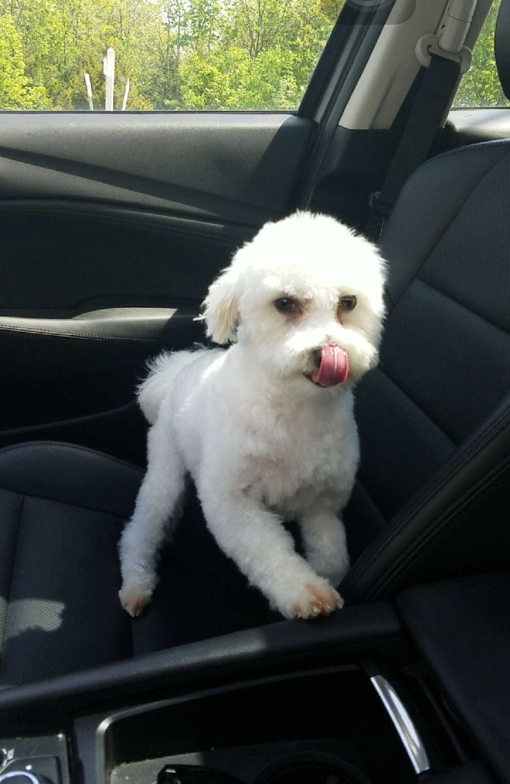

You Can Change a Dog's Life
If I haven't convinced you to consider adoption yet, take it from these people who have.
The Mathones adopted Leo 1 year ago. Prabdeep says, "".
Erin and her family adopted her dog Cali when she was still a puppy. Erin says getting Cali was .
Max was adopted by the Leivas